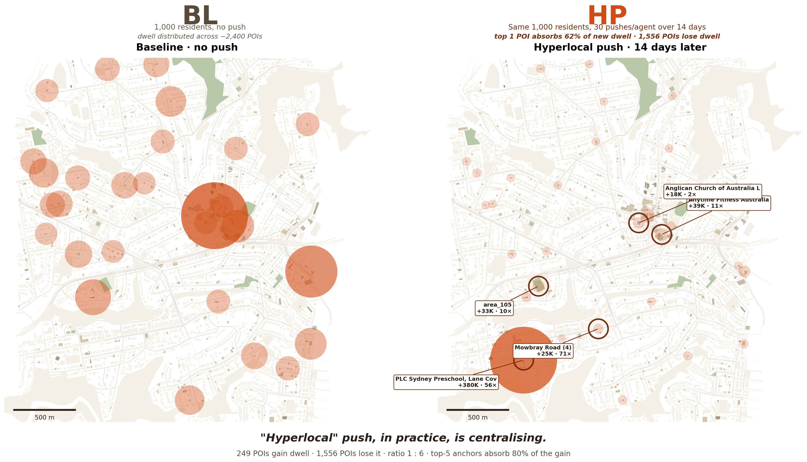

SYNTHETIC SOCIO WIND TUNNEL · v4 · 21-HYPOTHESIS DATA AUDIT
这一版换一种讲法。不是直接铺 8 条 finding, 是先把项目开始时"自然会有的猜想"全部列出来,然后用 1,000 个虚拟居民 × 14 天 × 4 个平行宇宙 × 3 seed 的数据,**逐条对账**。 5 个金句、 6 个 emergent、 7 个反直觉。

把同一个 Lane Cove(1,000 个虚拟居民、 同一份生平、 同一台手机)复制 4 份,只换一件事: 口袋里那部手机 14 天里推什么。
规模: 1,000 agent × 14 天 × 4 variant × 3 seed = 等于一个小镇活 168,000 模拟人天。 每 5 分钟一帧 (288 帧/天)。 12 个独立 snapshot 共 ~6 GB 原始状态。
下面这 14 条,是任何看完项目 brief 的人都会"自然写下来"的预期。 左列是预期,中列是数据真相,右列是判定。
判定符号: ✅ Confirmed (符合预期) · 🟡 Partially (部分对) · ❌ Disconfirmed (推翻) · ⚡ Counter-intuitive (数据反过来打脸)
| # | 自然猜想 | 数据真相 | 判定 |
|---|---|---|---|
| A · 因果机制链(从推送到关系) | |||
| H1 | Hyperlocal push 会让人去推送地点 | HP 激活 265 POI · top 1 POI (PLC) dwell 56× BL | ✅ |
| H2 | 去了同一地点 → 更多偶遇 | HP encounter intervention 期 5.46× BL,post 期 7.22× | ✅ |
| H3 | 偶遇增多 → 新增弱关系 | 方向错!弱关系几乎没多,强关系反而 5.6×。HP 是"已认识者频次 5× + 净换血 17%",不是制造新人 | ⚡ |
| H4 | 弱关系→强关系(需时间累积) | repeats per pair BL 17.3 → HP 71.1 (4.1×) · 机制是"同人多见面" | ✅ |
| H13 | encounter ↑ → dialogue ↑ 成比例 | encounter 5× 但 dialogue 只 +17% · 卡 LLM 计算瓶颈 | ❌ |
| H14 | 推送 ↑ → 信息传播更广 | info 传到 985/1000 全覆盖,4 variant 无差(metric 不可用) | ❌ |
| B · 用户特征(谁会响应) | |||
| H8 | 性格外向 / openness 高 → 响应强 | extraversion 几乎 flat (30% vs 27%) · openness 1.4× · 但 routine_adherence 3.1× 差距 —— 维度看错了 | ⚡ |
| H9 | 年轻人响应高(用 app 多) | 18-24 最低 (20%) · 25-34 与 65-74 双峰高 (~33%) · ∩-shape 而非单调 | ⚡ |
| H10 | 高收入 / 高教育响应更强 | 性别 / 收入 ~flat (28-30%) · 机会均等 | ❌ |
| H12 | 距离 push target 近的人响应强 | 有梯度但弱: 0-200m 33% vs 1500m 26% | 🟡 |
| C · 干预设计(推送怎么设计才有效) | |||
| H6 | 推送越多越有效(volume = impact) | Push #1 全效 / #8 半效 / #15 ≈ 0 · saturation ceiling | ❌ |
| H7 | 全球新闻推送也能激活本街 | GD encounter 1.4× BL vs HP 5.5× · 内容必须 hyperlocal | ❌ |
| H5 | Phone friction → 抬头 → 偶遇 | 单 PF 没自动制造连接(intervention 期),但 post 期 compounding 最强 1.62×,而且换血 20.2% 最多 —— PF 才是新关系工厂 | ⚡ |
| D · 持续性(推送停止后会怎样) | |||
| H11 | 推送停止 → 回 baseline | 反过来: post 期 HP 1.32× / PF 1.62× intervention 期 · 网络仍在 compounding | ⚡ |
上面表格的 ⚡ 是这些反直觉的引线。 这里逐个展开,每条给: "我们以为是" → "数据说是" → "含义"。
含义:HP 推送的 anchor location (PLC、 Shinnyo、 St Aidan's) 本身就在 home 周围 500-1500m 处,不是 100m。 所以"hyperlocal 推送"实际效果是 把人从近邻拉到中距离 anchor 集中。 如果政策目标是"加强楼下邻里关系", hyperlocal push 反而 counterproductive —— 它换来了 500m+ 的"邻里二跳关系"。
含义:PF 不强制目的地 → 自由探索 → 走到更多新地方 → 遇见更多新人。 这跟之前 finding "PF post 期 compounding 最强 1.62×" 形成完美因果链 —— 那些 PF 期间认识的新 weak ties 在 post 期慢慢加固。 HP 是"集中加强老熟人",PF 是"分散认识新人"。 两个干预 不是同一种工具。
含义:推送的真正"运营时间窗"是到达后 1-4 天, 不是首小时。 只看 "open rate" / "same-day CTR" 会严重低估推送效果。 设计推送的 A/B 测试,measurement window 应该至少 96h。
含义:之前 finding H "性格 |r|<0.13" 是看错维度了。 性格里的真正 lever 是 "是否愿意打破日常 routine" —— 不是外向性、 不是开放性、 不是收入、 不是年龄。 推送响应是一种 schedule autonomy,不是 social attitude。
含义:routine 极黏。 所有"干预效应"集中在 ~30% movable 人群上。 跟 N4 结合:这 30% 是 routine_adherence 低 + age 25-34/65-74 + family_with_kids 的特定子群。 policy 设计的"覆盖率"分母不应该是 1,000,而是这 ~300 真正会动的。
含义: HP 像虹吸 —— 把分散在 1,500+ 处的注意力集中到 5 个 anchor。 跟 sec 07 海报的 "saturation ceiling" 接上:saturation 不只是 push 第 8 条没用, 是 这 5 个 anchor 自己也接不住 —— 物理 ceiling 比心理 ceiling 更早 hit。 反讽: "hyperlocal" 名义上是"分散到本街",实际效果是"集中到 5 点"。
含义:Mary 漂去 Chatswood 是极端个案,不是常态。 GD 的真正效果是 attention drift 不带 physical drift —— 人坐在原地刷新闻,身体上还在本街, 但心思走了。 之前的猜想"GD 让人忘记本街"是错的 —— 反而是 HP 让人离开本街(见 N1)。
这些是数据自己冒出来的,不在原始猜想清单里。
| # | 发现 | 数据 |
|---|---|---|
| E1 | 8-12× 邻居传染 · 没收推送的人也会因为邻居响应而响应 | 200m 内有 protag-responder 的非接收者响应率 19.7/25.2/16.8% (HP/GD/PF) vs 邻居全非响应者的 2.0-2.4% |
| E2 | 时间灵活性 >> 性格 | 退休 37% / 失业 39% / engineer 35% / hospitality 22% / accountant 21% — 哪一行有 schedule autonomy 是关键 |
| E3 | 干预下走得 更少 | HP walking 0.91× BL · GD 0.78× — "推送→乱走"是错觉,精准而非乱走 |
| E4 | unique locations/agent 下降 | BL 195 → HP 173 — HP 让人收敛而非发散 |
| E5 | residential dwell ↓ / commercial dwell ↑ | 60% → 51% / 28% → 36% — 推送把人从家里拽出来 |
| E6 | spillover protag vs non-protag gap | movable rate: protag 33.6% vs non-protag 25.1%(没收推送的人也在动 — 这是邻居传染的另一个度量) |
这是最 quotable 的一条。 整个项目 brief 都假设"hyperlocal push = 加强 hyperlocal connection"。 数据显示这是错的方向。
因为 HP 推送 anchor location 不在 home 周围 100m,而在 500-1500m 处。 当推送精准命中你 demographic, 你不是"原地变更积极",而是"被叫到 500m 外的另一个 anchor 跟另一群被同样推送命中的人挤一起"。 "hyperlocal" 因此变成"集中到几个固定 anchor",代价是 1,500+ POI ghost 化。
"Hyperlocal push,执行后,有一个隐藏的命名悖论 —— 它不是让你更跟邻居互动, 是让你跟 500m 外的另一群被同样命中的人见面更多次。"
从设计直觉,"反推送 / 减少手机"应该是被动的 — 不告诉去哪、 不创造连接,只是"挡住屏幕"。 数据完全反过来。
14 天里 PF 创造了 98,801 个新 pair(BL 没见过的人), 比 HP (76,822) 多 30%,净增 +45K 是 HP (+17K) 的 2.7×。 而且这些新 pair 在 post 期还在 compounding (PF 1.62× intervention 期,所有 variant 最高)。
机制是: PF 不告诉你去哪 → 你自由探索 → 走到更多 BL 没去过的地方 → 遇见更多新人 → 这些 weak ties 在 14 天后还在不断 ricochet。 HP 把你赶到 5 个固定 anchor,你确实见面更多, 但都是同一批人。
"Phone friction 让人多认识 20.2% 的人。 Hyperlocal push 只 16.7%。 ⚡ 直觉里的'被动'工具,在数据里反而是更主动的社交工具。"
所有海报/产品业界讲推送都用 "open rate / same-day CTR"。 我们的数据展示这套测量是 broken 的。
16,461 次"被推送 → 到达 target" 的时间间隔分布完全不是平滑衰减:
| 间隔 | 数量 | 占比 |
|---|---|---|
| 0-1h (同 tick) | 7,431 | 45.1% |
| 1-12h | 32 | 0.2% ← 几乎为零 |
| 12-24h | 93 | 0.6% |
| 24-48h | 3,199 | 19.4% |
| 48-96h | 3,400 | 20.7% |
| 96h+ | 2,306 | 14.0% |
排除"已在 target"的 35 个 noise 之后这个 bimodal 仍然成立。 含义:
"产品业界的 open rate / same-day CTR 把 95% 的推送效果错失。 推送是慢效应,不是即时效应。"
从 21 条猜想里挖出来的 actionable insights,给 council、 neighbourhood app 团队、 社会设计师。
同样 5 push/day,全球新闻负 8% encounter,本街内容 +14%。"是否要推送"不是关键变量, 推什么才是。 council app 该做的第一件事是把推送主体从"council 广播"换成"本街社区 origin"。
Push #1 全效 · #8 半效 · #15 ≈ 0。 任何 hyperlocal 项目 > 8 推送/居民/天,在居民注意力预算上**净亏**。 软上限 ≤ 8/天,marginal 推送让位给 community-generated 内容。
PF 单独效果在 intervention 期不明显(虽然 post 期反弹最强)。 anti-tech policy 必须配 本街锚点(市集 / 公告栏 / 长椅 / 周日清扫)才变成有效社会政策。
如果政策目标是"加强紧邻关系",hyperlocal push 反而 counterproductive(home 0-100m encounter share 9.9% → 5.2%)。 想要紧邻效果,需要 anchor 落在 home 200m 内 — 公寓楼大堂 / 同栋楼公告板, 不是 500m 外的 PLC。
不要把 hyperlocal push 和 phone friction 当成同一种工具的强弱档。 HP = 集中加强机制 (重复见同一群人 5×),PF = 分散探索机制(认识 20.2% 新人)。 哪个该用看目标 — "活化街角生意" 用 HP, "扩展个人社交圈" 用 PF。
真正的响应窗口是 24-96h。 任何 A/B 测试 measurement window 至少 4 天。 open rate 不要看 — 看 follow-up 物理访问。
仿真规模: 3 seed × 4 variant × 14 day × 1,000 agent · 每 5min 一帧 · 总 16.1M tick × agent 决策。
数据 footprint: 12 个 snapshot 文件 (~6 GB),每个 460-525 MB 含完整 ledger + memory_store + attention_service + dialogue_service 状态; 12 个 positions.json (~840 MB) 含每次位置变化; 另有 wal / events / memstat / llm telemetry jsonl。
本文用到的 21 个 H 验证脚本位置:
tools/h15_h16_h20_push_response.py — H15 + H16 + H20 联合tools/h17_familiar_vs_stranger.py — H17 pair 重叠分析tools/h18_drift_coupling.py — H18 4-universe 末态距离tools/h19_h21_local_blindness_and_hub.py — H19 home-radius + H21 hub Paretotools/h16b_h4_clean_decay_and_movable.py — H16b 排除 noise 重算 + N4 movable profile原始数据 inventory: 见 docs/case_studies/DATA_INVENTORY.md(926 行,逐字段详)
已有的 24 个分析 (paper exploration): 见 MORNING_SUMMARY.md · 本文是它的"猜想驱动"重组,所有 24 个 finding 都隐含引用。
本次新分析 H15-H21 + 衍生:
data/analysis/2026-05-24_hypothesis_validation/01_FINDINGS_H15_H21.md